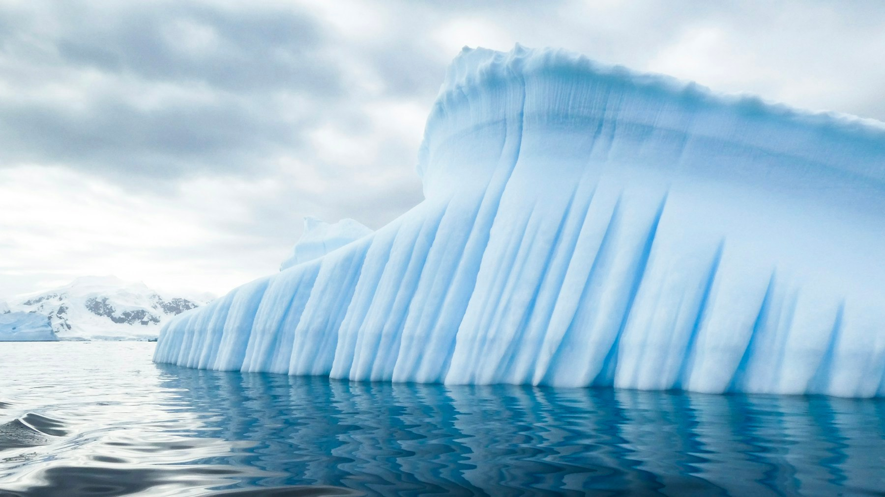
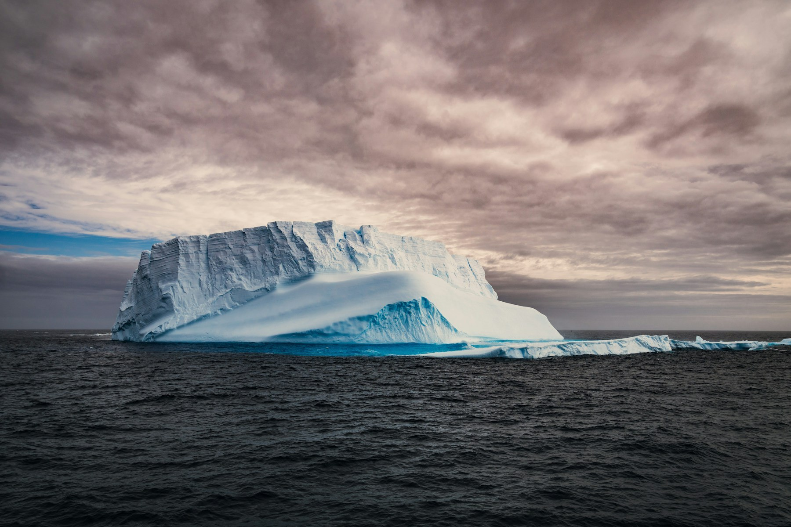
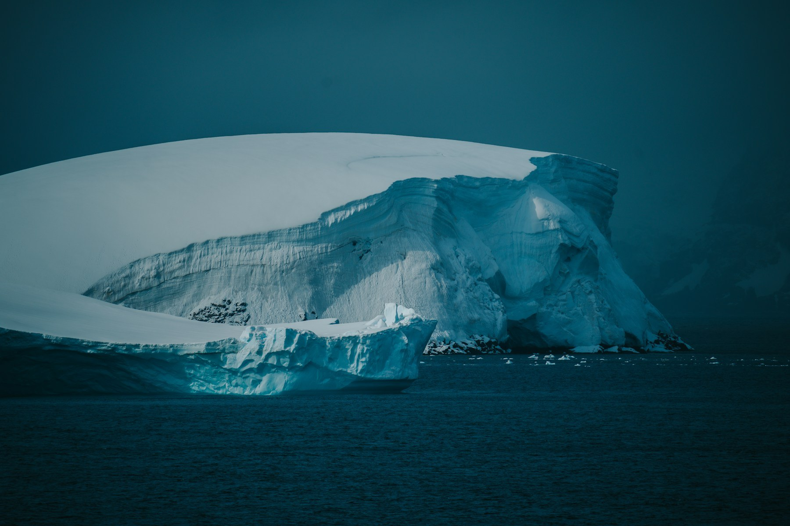

ANTARCTICA / A VISUAL LETTER
极地来信
Letters from the ice.
SOUTHERN OCEAN
01 / 03照片未能读取，请保留同目录的 assets 文件夹。
01
冰的褶皱
THE ARCHITECTURE OF ICE
PHOTOGRAPHYDerek Oyen / Unsplash
作品目录SELECTED WORKS / 3



Letters from the ice.
照片未能读取，请保留同目录的 assets 文件夹。
THE ARCHITECTURE OF ICE